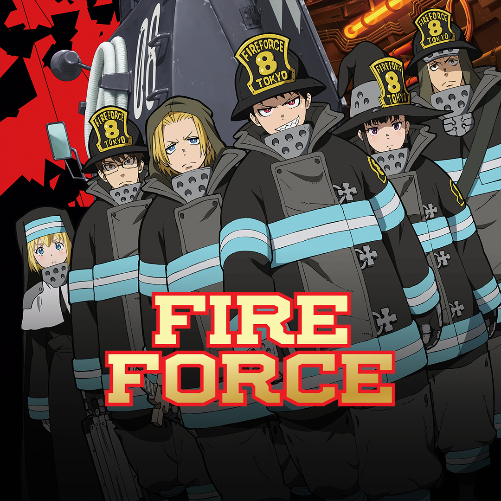
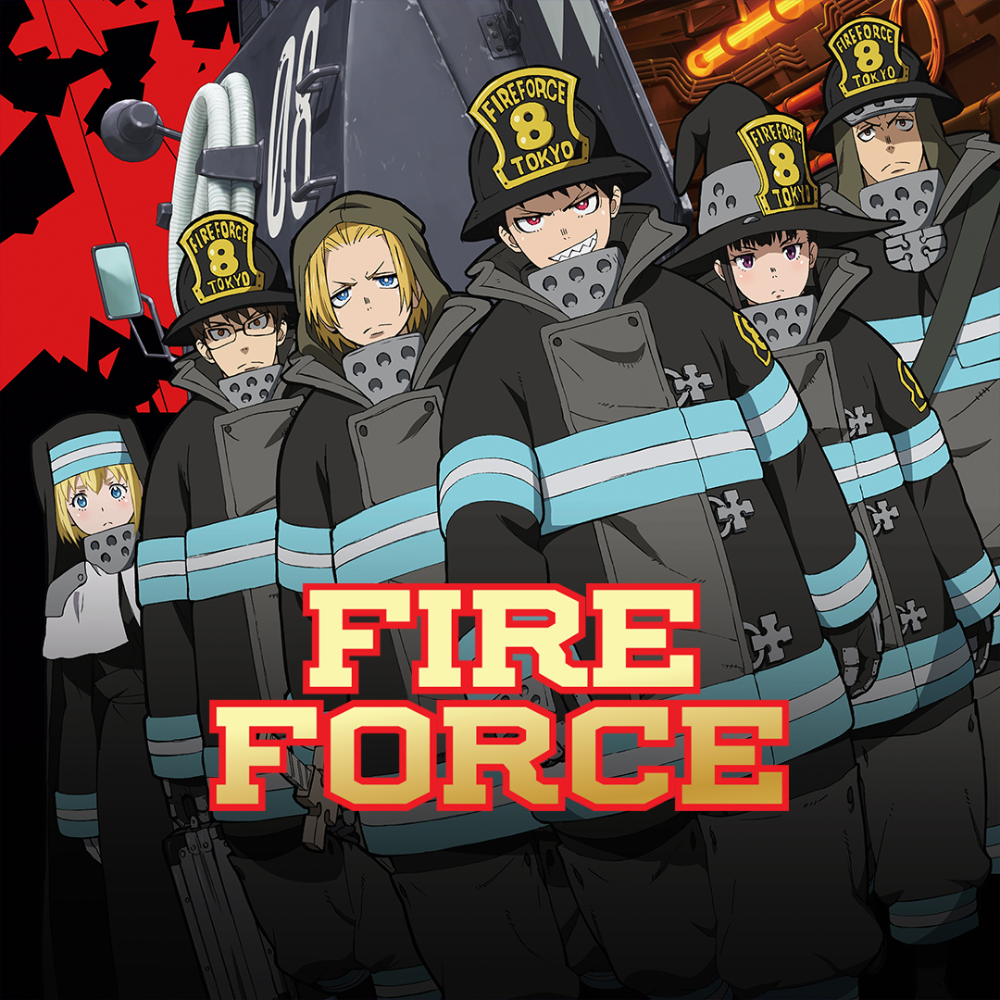

Top 5 anime of 2019: List does not include continuing anime series.
5. No Gun Life
In this dark and grimy future world, Juzo Inui is a hard boiled man with a gun for a head. He works to solve cases involving extends. He is joined by Mary Steinberg, a back-alley doctor/extends mechanic and Tetsurō Arahabaki, a client of Juzo with the power to control other extended people. He is being hunted by the Berühren Corp. If you are wondering, extends are people with cybernetic body modifications. The story is full of heart and depth. This hard boiled detective saga is adopted from Tasuku Karasuma manga. The studio behind it is Madhouse Inc..
4. Promised Neverland
It is a nice story about children living out they lives at an orphanage. When Emma and her friends discover the truth about the dark nature of the orphanage, it is a race against time to escape and uncover how things got this way. In this mystery and horror anime based on Kaiu Shirai manga, the suspense runs high. The studio behind it is CloverWorks Inc. with Season 2 coming is Fall 2020.
3. Demon Slayer
In the Taishō era, Japan (around 1912), Tanjirō Kamado lives a normalish life in the mountains until one day his whole family gets killed by a demon except his sister Nezuko. Now, Tanjiro searches to kill the demon that killed his family and turn his sister back to normal. First he must join the Demon Slayer’s group and gain the skills to take his revenge in this action packed adventure anime based on the manga by Koyoharu Gotōge. The studio behind it is Ufotable, Inc..
2. Fire Force
There are a million ways to die, but the thing people fear the most in spontaneous human combustion. Shinra Kusakabe is a third generation pyrokinetic youth that just joined Fire Force company 8. Follow along as the members of Fire Force company 8 work to uncover the truth behind human combustion and uncover the mysteries of the world in this action packed anime based on the amazing manga by Atsushi Ōkubo. The same Mangaka wrote and drew Soul Eater. The studio behind it is David Production Inc. with season 2 coming in Summer 2020.
 


Honorable mention: One Piece: Stampede
It is the latest in the One Piece movie epic. In this rollercoaster of a movie, the Straw Hat crew are joined by fan favorites from throughout the series to participate in the Pirate Festival. The movie is an action packed non stop masterpiece of cinema. It is a must see and is too good to spoil anything else about it. So whether you are a long time fan of One Piece or brand new, you will enjoy this movie. One Piece manga is by Eiichiro Oda-sama. The studio behind the movie is Toei Animation.
1. Dr. Stone
One day, everyone was turned to stone. 3000 years later, a young genius named Senku wakes up. Now, Senku using the power of science plans to bring back the world that was lost and with the help of his friends, he has a fighting chance. But things are not going to be that easy for Senku. The show uses real science to create a dynamic adventure story and relatable characters. The anime it is based on the manga by Riichiro Inagaki in collaboration with Mujik Park. The studio behind it is TMS Entertainment Ltd. Season 2 is coming sometime in the future. A date has not been announced at this time.
All Right Reserved 2019 Anime Fan Helper